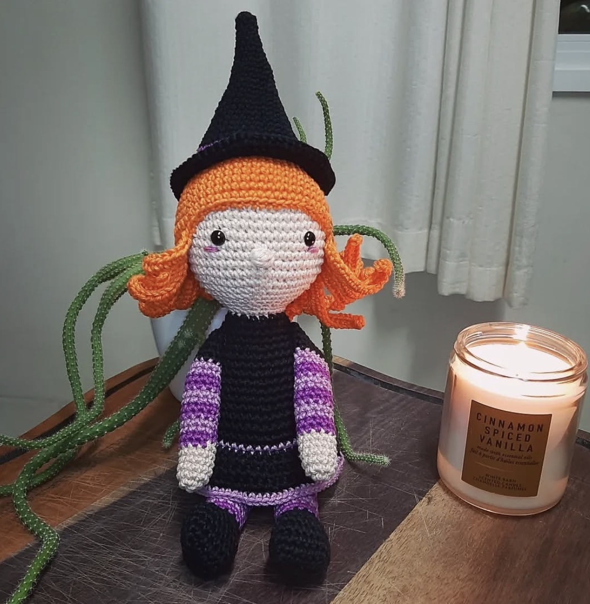
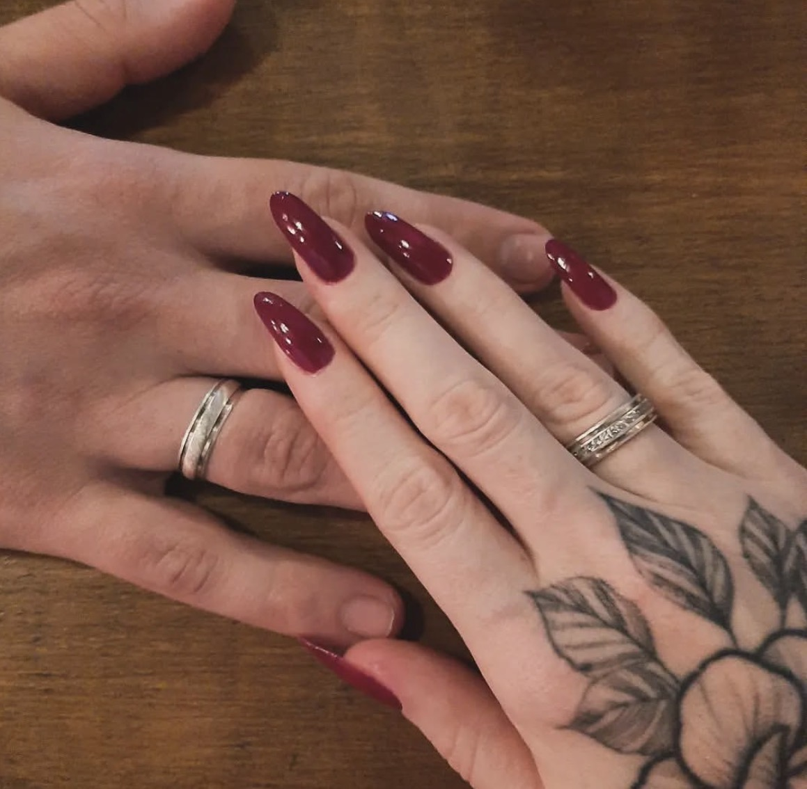

Natacha Iria Pereira Lopes
Galeria de Momentos

Hobby
Seu hobby é criar amigurumi!
Relacionamento
Relacionamento Rhuan e Natacha

Passa-tempo
Ir a academia se exercitar

Vaidade
Sempre com as unhas impecáveis em sala de aula
Qualidades que Admiro
Ateciosidade
Empatia
Resiliência
Sabedoria
Bondade
Integridade
Memórias Especiais
Algumas das memórias mais preciosas que guardo são aqueles momentos simples, mas significativos, que compartilhamos. Desde uma conversa descontraída até os momentos de apoio mútuo, cada instante contribuiu para fortalecer nossa conexão.
Espero que possamos guardar as lembranças que tivemos criando um carinho de professora para alunos, onde sempre esteve nos apoiando em cada desafios que a vida pode nos apresentar.